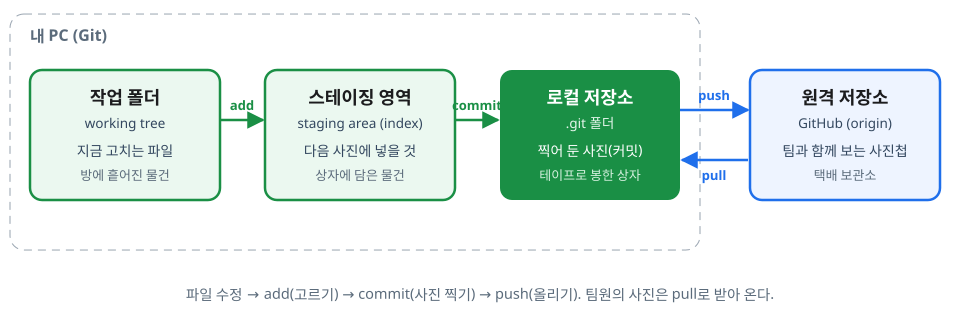

1장 · Git과 GitHub로 협업하기Git과 GitHub는 왜 첫 장인가용어 정리 — 이 장에서 처음 만나는 말설치와 첫 설정 — Git Bash와 GitHub 계정커밋은 사진 한 장 — 작업 폴더 · 스테이징 · 저장소따라하기 — 첫 저장소와 첫 커밋브랜치는 이름표 — switch와 mergeGitHub와 원격 저장소 — push · clone · fetch · pull따라하기 — 충돌은 고장이 아니라 대화 요청Pull Request와 GitHub Flow — 합쳐 달라는 요청서GitHub Organizations — 우리 과정의 팀 저장소올리면 안 되는 것과 되돌리기 — .gitignore · restore · revert강사 코드 태그로 따라잡기 — clone · tag · switch --detach정리와 체크리스트실습문제와 힌트 — 기본 · 필수 · 도전
1장. Git과 GitHub로 협업하기
커밋은 사진 한 장 — 작업 폴더 · 스테이징 · 저장소
한 줄 요약
커밋은 그 순간 프로젝트 전체 파일을 찍은 사진(스냅샷)입니다. 사진을 찍기 전에 무엇을 찍을지 고르는 단계(스테이징)가 있습니다.
1. 커밋은 "사진 한 장"이다
커밋이란? 특정 시점의 프로젝트 파일 상태와 변경 정보(누가, 언제, 왜)를 저장소에 기록한 것입니다. 기록해 둔 커밋으로 언제든 돌아갈 수 있습니다.
Git은 커밋할 때마다 그 순간 모든 파일의 모습을 사진처럼 저장합니다. 바뀌지 않은 파일은 다시 저장하지 않고 이전 사진의 것을 가리키므로, 사진을 많이 찍어도 무겁지 않습니다. (Pro Git 1.3)
커밋 = 그 순간 프로젝트 전체의 사진. 언제든 그 사진으로 돌아갈 수 있습니다.
2. 사진을 찍기까지 세 영역

| 영역 | 뜻 | 들어가는 명령 |
|---|---|---|
| 작업 폴더 (working tree) | 지금 내가 고치고 있는 파일 | 파일 수정 |
| 스테이징 영역 (staging area) | 다음 커밋에 넣기로 고른 변경 | git add |
로컬 저장소 (.git 폴더) |
저장한 커밋들 | git commit |
출처: Pro Git 1.3 — The Three States
왜 바로 찍지 않고 고르는 단계가 있나
로그인 기능을 고치다가 오타 하나를 다른 파일에서 같이 고쳤다고 합시다. 두 변경을 다른 사진으로 남기고 싶다면, 로그인 파일만 add해서 먼저 커밋하고, 오타 파일은 나중에 따로 커밋합니다.
한 커밋에는 한 가지 일만 담습니다. 나중에 "로그인 기능만 되돌리기"가 쉬워지고, 리뷰하는 팀원도 읽기 쉽습니다.
3. 파일의 네 가지 상태
git status는 파일이 지금 어디에 있는지 알려 줍니다.
git status에 보이는 말 |
뜻 | 다음에 할 일 |
|---|---|---|
Untracked files |
Git이 아직 모르는 새 파일 | git add |
Changes not staged for commit |
고쳤지만 아직 고르지 않음 | git add |
Changes to be committed |
골라 둠. 다음 사진에 들어감 | git commit |
nothing to commit, working tree clean |
모두 사진으로 찍힘 | 다음 작업 |
핵심 정리
- 커밋은 그 순간 전체 파일의 사진이다.
- 작업 폴더 → (
add) → 스테이징 → (commit) → 저장소. - 한 커밋에는 한 가지 일만 담는다.
- 헷갈리면 언제든
git status.